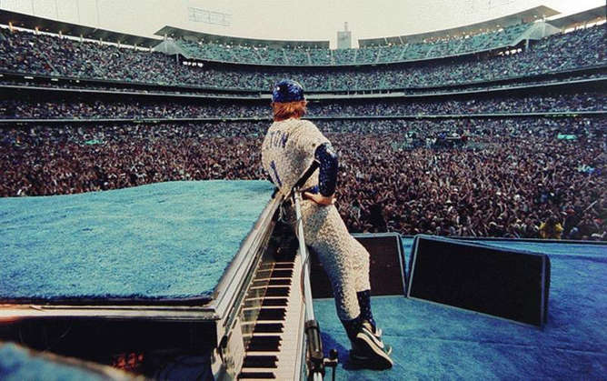

Si no conoces estas fotos no se en que mundo vives. ESTAS SON LAS FOTOS MAS RECONOCIBLES DE LA HISTORIA DEL ROCK.
No 1: THE BEATLES Eso es la emblemática foto de los cuatro beatles cruzando el paso de peatones en Abbey Road. La sesión de fotos para el disco Abbey Road de The Beatles tuvo lugar un 8 de agosto de 1969, alrededor de las 11:30 de la mañana.
Eso es la emblemática foto de los cuatro beatles cruzando el paso de peatones en Abbey Road. La sesión de fotos para el disco Abbey Road de The Beatles tuvo lugar un 8 de agosto de 1969, alrededor de las 11:30 de la mañana.
No 2:
La fotógrafa tomó esta imagen el mismo día que John Lennon fue asesinado por Mark David Chapman, a las afueras del edificio Dakota de Nueva York. La imagen es histórica por ser la última de la pareja y una de las más emblemáticas en la historia de la música. Todo el amor que Yoko y John se profesaron es fielmente reflejado en esta imagen, en la cual él se aferra al cuerpo de ella en una posición fetal. Al mismo tiempo, pareciera como si John de despidiera de su esposa.
No 3:
Keith Richards yace totalmente inconsciente, tras una de sus múltiples borracheras, durante la gira mundial de los Stones; a la que la fotógrafa fue invitada por Mick Jagger. La misión de Leibovitz era documentar de manera íntima la vida desenfrenada de la banda, algo que logró de manera memorable, tal y como lo muestra esta imagen icónica en la que se exhibe la vida de una estrella del rock.
No 4.

El mítico Elton John registró dos llenos absolutos consecutivos en la ciudad de Los Angeles. A la historia pasará su atuendo que simulaba el uniforme de los Dodgers, adornado con lentejuelas. El pianista abrió su recital con “Your Song”, provocando la euforia entre la audiencia que rindió culto al "Rocket Man" y su grandioso piano.
No 5:
Durante un concierto de los Stones, Mick Jagger se reúne en los camerinos con Bob Marley, la gran gloria del reggae, y Peter Tosh, una de las grandes figuras del movimiento Rastafari y activista prolegalización de la mariguana. Los tres lucen relajados, alegres, en un ambiente de total camaradería. El cantante de los Stones ayudó a Tosh a impulsar su carrera como músico, al firmarlo con el sello discográfico Rolling Stones Records y grabar juntos el sencillo "Don't Look Back".
No 6: 
Si existe una foto icónica de Jimmy Page, guitarrista de la banda inglesa Led Zeppelin, es ésta. Imagen en la que el músico es captado en tosa su magnitud y maestría con la guitarra de doble mástil. Gran parte de la genialidad de Led Zeppelin se debió a la capacidad de Page con las seis cuerdas y su mística presencia en el escenario.
No 7.
La banda de glam rock, KISS, dominaba la escena musical de los Estados Unidos en los 70, con sus conciertos llenos de fuego, sangre, disfraces y guitarras estruendosas. Gruen aparece al centro de la fotografía atento a no ser devorado por Gene Simmons, el bajista de la banda, que observa con desafío hacia los espectadores.
No 8.
Esta iconica foto fue tomada en la presentacion de la banda QUEEN durante el concierto benefactario "LIVE AID".